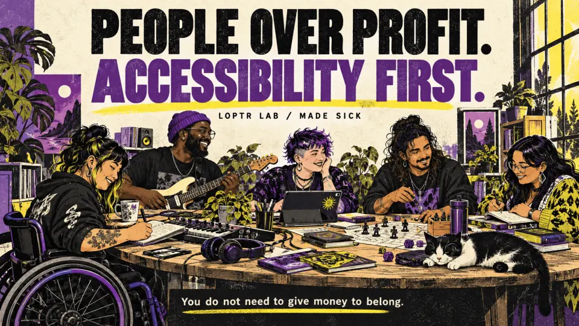
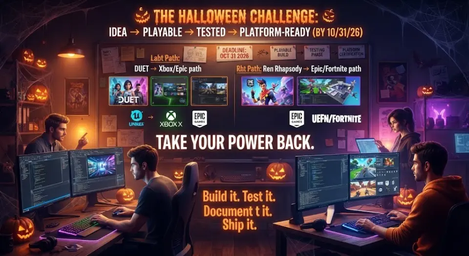

Discover
Find creators, their work and the stories behind it.
A creator-owned directory in the ATmosphere
Made Sick celebrates creators who crossed something meaningful off the list—and makes room for the work, habits, and people that helped them get there.
An independent, consent-first community directory celebrating creative work, meaningful milestones and the people who help us continue.
Find creators, their work and the stories behind it.
Tell your story in your own words. Choose what becomes public.
Explore community and creative projects at your own pace. No diagnosis required.
Writing from the Made Sick publication, kept at the creator’s source.

Mission · Founder publication
The mission, voluntary participation terms and boundaries for supporting the Loptr Lab ecosystem.
Read on pckt.blog ↗Storytelling · Founder publication
How a public Bluesky feed became a story through recurring references and themes.
Read on pckt.blog ↗
Development · Founder publication
A development account about game architecture, written contracts and decisions left open.
Read on pckt.blog ↗Creator-submitted pilots and attributed public references. A public reference does not mean someone has joined.
Vision disability · Worldbuilding after treatment
I. B. Loud says they created The Rift Report after receiving intraocular-lens implants following cataracts and glaucoma that had gone untreated.
Authorized by the creator · Self-reported health context · Account relationship pending DID verification
Visit The Rift Report Open pckt.blogCreation through chronic illness
Ren has publicly discussed Lyme disease, autoimmunity, treatment, and making work while seriously ill.
Not enrolled · Artist's public account
Read the interviewNeurodivergent creative practice
In a public post, Webby described himself as autistic and framed the way his mind works as a superpower.
Not enrolled · Self-description, not diagnosis
View the public statementPlan the journey around your energy, rest breaks and access needs.
Explore Gatwick and Heathrow transfers, accommodation information and assistance resources.
Open Travel & AccessFind wheelchair information, venue reviews, chronic-illness and invisible-disability resources, and fatigue planning.
Browse accessibility resourcesCheck specific needs with the provider before booking. Current adventure stops are researched suggestions; access has not been surveyed locally.
How to participate
Authenticate the identity you control, review the public-record boundary, and explicitly publish your participant record.
Review what will be public and give explicit directory consent before publishing. Your provider handles sign-in; Made Sick never asks for your password.
Your participant record lives in your own AT Protocol repository and can be deleted from the join page.
Research into creative tools that remember context and act with permission.
Explore PIXIEA place to turn creative inspiration into shared work.
Explore Remedy WardProposed creator-owned conversations. No sessions are scheduled yet.
Explore SessionsTechnology & Creative Access
Creative tools ask people to remember filenames, folders, versions, and recovery steps while they are trying to make something. PIXIE is a consent-first research project asking technology to carry more of that administrative burden.
Beginning with musicians, filmmakers, designers, and game developers. The goal is not to monitor people or diagnose how they feel — it is to help devices understand human intent, preserve provenance, suggest reversible organization, and make interrupted work easier to resume.
PIXIE · Technology & Creative Access
Creative tools ask people to remember filenames, folders, versions, and recovery steps while they are trying to make something. PIXIE is a consent-first research project asking technology to carry more of that administrative burden.
The creator explains what they made in ordinary language. They do not have to learn or remember a machine naming convention.
The device suggests names, versions, metadata, destinations, and retrieval paths from context it already possesses.
Every organizational action is previewed, reversible, explainable, and performed only with permission.
We are beginning with musicians, filmmakers, designers, photographers, and game developers. PIXIE does not monitor people, diagnose emotion, or infer capacity from task behavior.
The Remedy Ward · Fandom as infrastructure
Some music doesn't just move people — it holds them together through illness, isolation, and the specific grief of not being believed. The Remedy Ward is Made Sick's framework for turning that energy into something structural: consent-first, community-built, and replicable by any fandom.
Ren's fanbase — r/ren, the Sick Boi community — has organically produced exactly the conditions the Ward is designed to support: fans organizing local screenings, peer support sessions, and mutual aid around music that addressed chronic illness and systemic failure directly. That existing energy is the proof of concept.
Not enrolled · Artist's public account · Independent Loptr Lab interpretation only · No affiliation, endorsement, or participation by Ren or his team is implied
Read the public interview ↗The Ward asks three questions of any fan community: Does your artist's work address illness, survival, or systemic harm? Has that work generated real mutual support among fans — not just admiration? Are fans ready to make that support visible and structured, with consent as the foundation?
If yes to all three, the Ward gives you the infrastructure: a consent-first directory, a story archive, a live session model, and a private channel that opens only when both people choose it.
Fandom ward-building follows the same path as any Made Sick participant: request an invite, verify your AT Protocol identity, and propose your community as a ward within the directory. The fandom's artist is listed as a public record example — not enrolled — until and unless they choose to participate on their own terms.
Request an invite ↗ Read the Inpatient Corridors prototype ↗
Structural inspiration: The Remedy Ward's community-care model draws from HeartSupport — a non-profit founded by Jake Luhrs to bring peer mental health support directly to music fans at shows and festivals. HeartSupport is not affiliated with Made Sick and has not endorsed this project. Their model — born in the scene, built for the fans — is cited here as the kind of structural thinking the Ward aims to extend into consent-first, decentralized fandom infrastructure.
Thematic backbone: The ward/remedy framing grows from Inpatient Corridors / Break the Grid — an independent Loptr Lab prototype exploring institutional pressure, community care, and system redesign. That project is not affiliated with or endorsed by any artist whose work informed its themes.
The Remedy Ward is a community infrastructure framework, not therapy, crisis response, clinical care, or emergency support. For urgent needs, use an appropriate local professional or emergency service.
Made Sick Sessions · Proposed pilot
An opt-in creator may pair a pckt.blog story with a public Streamplace conversation about the work, milestone, and practices that helped them continue.
No session is scheduled. No player loads—and no viewer data is sent to Streamplace—until an approved creator and stream are configured.
Identity, topic, guests, recording, reuse, and withdrawal terms are confirmed.
A named moderator, content note, resource plan, and escalation boundary are published.
Only owned, licensed, or authorized media may be broadcast.
The creator's Streamplace handle—not a copied video—is used on the profile.
Independent prototype · Made Sick is not affiliated with or endorsed by Streamplace. Public livestream chat is not private support, therapy, or emergency care.
Made Sick Adventures · Pre-alpha
Plan around your dates, your energy and the breaks you need. Our first featured guide is RENSpace Adventure in Brighton, with Halloween featured, original scavenger-hunt clues, places to eat and rest, shopping and downloadable phone-map pins.
Choose a shorter outing or spread the trail across your visit. Every clue is optional, and you can explore from home.
Open the public pre-alpha ↗Visit adventure.made-sick.org · Public pre-alpha.
Vetted events, accommodations and travel options are planned. Future listings will show specific details about rest, physical access, sensory conditions, flexibility and costs, with sources and review dates.
Current venues are researched suggestions. Access has not been surveyed locally; no accommodation is vetted yet. No diagnosis or health disclosure is needed to explore.
Independent Loptr Lab / Made Sick project. Artist references do not imply participation or endorsement. Read the pre-alpha status and next steps ↗
Search your public story archive or explore the optional prototype tools.
One identity, distinct layers
Creators publish under an identity they control and keep their voice at the source.
Visit pckt.blog ↗Compatible long-form records make writing portable and discoverable across AT Protocol apps.
See the standard ↗Made Sick indexes approved identities, selected posts, milestones, events, and field-level evidence.
An optional, creator-enabled route to end-to-end encrypted messages. Closed unless invited.
Visit Germ ↗Phase 2 · the signal is open
Read the public archive. Enter the game. Witness the live signal. Open a private channel only when both people choose it.
Story layer: an independent Loptr Lab participatory prototype inspired by dystopian collective storytelling and Ren's earlier Money Game treasure-hunt experience. It is not an official Ren, Sick Boi, Mr. Robot, or fsociety experience.
Functional test case · creator-controlled
Pilot fixture · no invitation sent
01 · IDENTITY
@ibloud.xyz
One identity · tools open separately
PIXIE.PCKT.BLOG
Paraconsistent · Inclusive · Xenodochial · Intuitive · Ecstatic
site.standard.publication/3m5orwxvvm2tq
Can work born from pain become an ecosystem for joy?
READ AT THE SOURCESTORY FINDER
Search a public Bluesky author feed by words, exact phrases, dates, replies, reposts, and links. The full workspace is designed for long diary entries and accessible review.
@ibloud.xyz
Privacy: no Bluesky password, sign-in, DMs, likes, analytics, or server-side archive. Search terms and selections remain in the Story Finder tab. Export creates a creator-controlled research ledger; it does not publish a post or enroll anyone in the directory.
DUET.LOPTRLAB.COM
The pilot record above controls whether a Duet invitation may be prepared and whether a player-owned session reference may be kept.
Open Duet ↗Locked until you check "Prepare an invitation to play at duet.loptrlab.com" in the pilot record above and save. Go to pilot record ↑
Made Sick does not yet receive gameplay events. Opening Duet leaves this site.
STREAM.PLACE/IBLOUD.XYZ
Loading the player connects your browser to Streamplace. Chat is public and is not therapy, crisis response, or a private support channel.
No Made Sick Session is scheduled. Recording, media rights, moderation, topic notes, and takedown contacts must still pass the activation gate before a session is promoted.
A GENTLE, DEVICE-LOCAL CUE
This desk keeps the example visible: a person chooses the moment, the reminder, and whether “done,” a smaller version, or rest fits today. Nothing here diagnoses, scores, or assumes capacity from age.
Explore PIXIE Device Stewardship ↗
Safety example: no account, cloud storage, HealthKit, location, ads, streaks, leaderboard, age gate, or medical advice. The working device-local cue now opens inside PIXIE OS.
GERM · CREATOR CONTROLLED
The current public profile declares incoming Germ contact unavailable. Made Sick respects that setting and provides no message box, inbox, or substitute contact route.
Made Sick reflects policies; it does not process or relay encrypted Germ messages.
Made Sick is an independent Loptr Lab prototype. Artist references do not imply enrollment, endorsement or affiliation. Wellness stories are personal experience, not medical advice.
Participation is optional. Financial support does not buy participation, influence, ownership or employment. Sponsorship should come from financial stability, with no expectation of return beyond the stated perk.
Loptr Lab is a pre-seed, people-over-profit, accessibility-first venture working toward a self-sustaining model within a capitalist economy. Money sustains the work; meaningful change for people is its purpose. We accept funding only on terms that keep people and accessibility first. Our long-term vision includes universal basic income. We aim to bring change to life and leave a transparent record of what we tried, what worked, and what failed so others can carry it forward. This mission governs our projects, funding decisions, and partnerships; it is not a temporary marketing position.
Current open review and contribution opportunities are voluntary and unpaid. Before work begins, agree in writing on scope, time, what will be public, credit preferences, and an exit path. You can stop at any point. Participation does not promise employment, ownership, revenue share, academic credit, or future pay. Any paid commission or other formal arrangement requires a separate signed agreement before work begins. External assistance or benefits belong to the participant and are not compensation from Loptr Lab.
A story you can recognize
Ren's official Sick Boi episodes turn a clothing line into a dystopian narrative about subjects, systems, and agency. Made Sick reads the uniform as a voluntary sign of recognition and community. Wearing it does not disclose illness or enroll anyone in this independent prototype.
Episode 1 establishes the cinematic world and its institutional language.
Watch the official episode ↗Episode 2 extends the world around the second Sick Boi clothing drop.
Watch the official episode ↗The official film anchors the wider creative language in Ren's work.
Watch the official film ↗Ren publicly distinguished the boutique clothing project from lower-priced tees, beanies, vinyl, and other official merchandise.
Visit the official merch store ↗Independent interpretation by Loptr Lab · No affiliation, endorsement, or participation by Ren, Sick Boi Ltd, or their teams is implied.
Creative Inspiration
Made Sick is an independent expression of the spirit behind Chris Do's "1 Billion Mission": helping more people make a living doing what they love.
If you want practical education about creativity, business, personal branding, pricing, and building a sustainable creative career, visit The Futur ↗.
Made Sick is an independent project and is not affiliated with or endorsed by Chris Do or The Futur. The referral is optional and separate from PIXIE's health features: no gated access, urgency language, automatic enrollment, or suggestion that earning money is a condition of recovery.